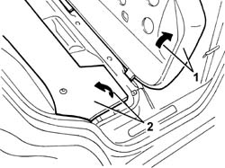
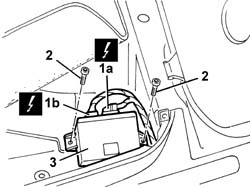

7010M40 rear window system ecu - r+r following electrical wiring check
- Path
- Procedures > 70 FITTINGS > 7010 PASSENGER COMPARTMENT REAR SIDE DOORS > 7010M rear electric windows > 7010M40 rear window system ecu - r+r following electrical wiring check
- Kind
- repair procedure (removal / refitting; the operation number is the code)
- Applies to
- all engines; all production periods
- Interactive page
- https://sloeber94.github.io/elrnDB-a147/en/#/3025727
Applies to: all engines; all production periods
 Removing
Removing
 Refitting
Refitting1. Lift up the rear seat cushion, right side.
2. Lift up the sound insulation panel slightly.

Applies to: all engines; all production periods
1. Disconnect electrical connections (1a), (1b).
 | Name | Connector |
|---|---|---|
1 | Rear electric windows control unit |
| Name | Connector |
|---|---|---|
1 | Rear electric windows control unit |
2. Unscrew the bolts
3. Remove the window opening control unit.

Applies to: all engines; all production periods
Refitting
RemovingCheck that the window opening control unit is not damaged.
Position the window opening control unit.
Tighten the screws.
Connect the electrical connection.
Place the sound insulation panel in position.
Lower the rear seat cushion, right side.
Check that the windows in the rear doors are working properly.